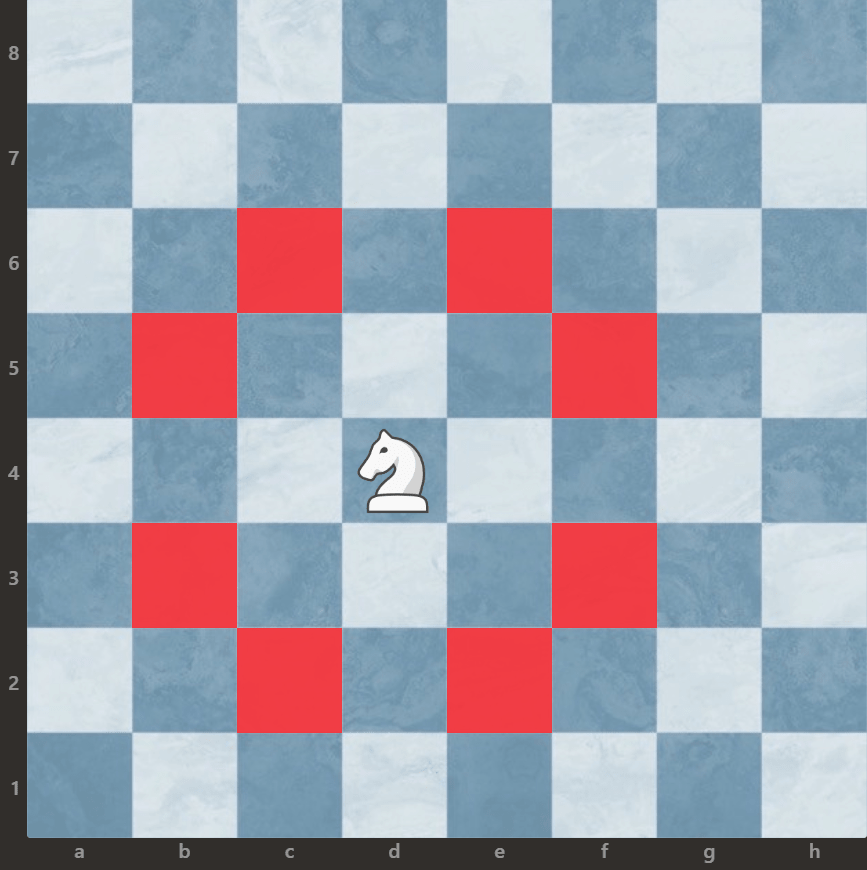
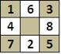
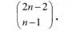
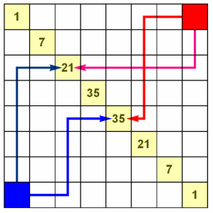
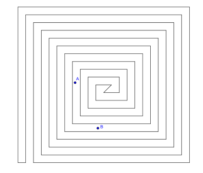

Problem skoczka jako przykład związków matematyki i szachów,
oraz przykład drogi otwartej skoczka szachowego na szachownicy 8x8
1. Problem skoczka
Skoczek szachowy może poruszać się w sposób przedstawiony na rysunku:

Problem skoczka szachowego, czyli zadanie polegające na obejściu skoczkiem
wszytkich pól planszy tak, żeby na każdym polu stanąć tylko i wyłącznie raz.
To co widzimy po prawej stronie to tak zwana ścieżka otwarta, czyli że skoczek
może obejść wszystkie pola planszy, ale po ostatnim ruchy nie może wrócić na pole startowe.
Jeśli mówimy o ścieżce zamkniętej to polega ona na tym, że skoczek po ostatnim ruchu
może wrócić na pole, z którego zaczynał, to nazywamy to zamkniętą ścieżką skoczka szachowego
Dla planszy o wymiarach 3x3 skoczek może obejść maksymalnie 8 pól, ale na dziewiąte, środkowe nie może wejść.
Przykład ruchów skoczka dla szachownicy 3x3:

Przykład drogi zamkniętej szkoczka szachowego na szachownicy 8x8


Oraz przykład ruchów dla szachownicy 4x4:
Warto wspomnieć o tym, że dla planszy 3x3 oraz planszy 4x4,
nie istnieje rozwiązanie które zajmuje wszytkie pola szachownicy,
aby uzupełnić wszystkie pola szachownica musi mieć wymiary conajmniej 5x5!
2. Związek matematyki z samą grą w szachy
Matematyka i szachy – mają ze sobą liczne powiązania, istnieje wprawdzie wiele zadań szachowych które można roziwązać matematycznymi metodami,
natomiast istota gry w szachy i jej teoretyczna struktura nie dały
się zawrzeć w matematycznych formułach. Matematyk Henri Poincaré posługiwał się modelem szachów do rozważań definiujących naturę matematyki.
Godfrey Harold Hardy twierdził, że reguły gry w szachy są matematyką, ale matematyką trywialną, nieznaczącą.
Według niego gdyby nie wymyślono szachów, myślelibyśmy tak samo jak obecnie,
ale twierdzenia Euklidesa i twierdzenie Pitagorasa wpłynęły głęboko na nasze myślenie, także na myślenie niezwiązane z matematyką.
Istnieje wiele zadań geometryczno-matematycznych:
- Twierdzenie o szachownicy
- Problem skoczka
- Droga od niebieskiego narożnika
Powyżej wymienionymi pojęciami zajmę się w następnych rozdziałach!
3. Droga od niebieskiego narożnika
Ile jest dróg z niebieskiego kwadratu do północno-wschodniego punktu na grani? Oczywiście jedna: za każdym razem na północ,
więc zakodujemy ją jako 1111111.
Będziemy pisać 0 na zaznaczenie, że wybieramy drogę na wschód, czyli poziomo w prawo.
Wtedy dwie drogi wychodzące z południowo-zachodniego narożnika to 0011100 oraz 1111100.
Takie układy zer i jedynek odpowiadają liczbom dziesiątkowym 4 + 8 + 16 = 28 oraz 4 + 8 + 16 + 32 + 64 + 128 = 252.
Liczby na przekątnej ("na grani") pokazują, na ile sposobów można się dostać z narożnika na grań.
To wynika od razu z trójkąta Pascala (wiadomości licealne nawet na poziomie podstawowym).
Wyobraźmy sobie, że dwóch turystów, z których jeden mieszka w miejscowości "niebieskiej", a drugi w "czerwonej",
umówiło się na spotkanie w wyznaczonym miejscu grani. Mają taką samą kondycję, idą tak samo szybko,
więc powiedzieli sobie przez telefon, że każdy wyjdzie o dziewiątej i ewentualnie poczekają na siebie na grani kilka czy kilkanaście minut.
Jeżeli umówili się w jednym z punktów "35", to każdy ma 35 sposobów dojścia. Po połączeniu daje to 352 możliwości drogi niebieski-czerwony.
Tak jest dla każdego innego punktu spotkania. Łącznie możliwości jest zatem 12 + 72 + 212 + 352 + 352 + 212 + 72 + 12 = 3432.
Bardziej wprawni Czytelnicy mogą obliczyć, że gdy szachownica jest rozmiaru n na n, to dróg takich jest

Dla n = 3, liczba możliwych dróg wynosi 4, a ta liczba rośnie bardzo szybko, ponieważ dla n = 4, ta liczba wzrasta do 20


4. Twierdzenie o szachownicy
Twierdzenie o szachownicy będące przykładem rozumowania topologiczno-kombinatorycznego
wykorzystującego akcesoria szachowe, czyli planszę i bierki.
Jest ono szczególnym przypadkiem dyskretnego odpowiednika twierdzenia o krzywej Jordana (ad. 1)
Twierdzenie pojawiło się jako zadanie do rozwiązania na stronie 32 „Kalejdoskopu matematycznego” Hugona Steinhausa.
Sam autor twierdził, że pochodzi ono od jednego z lwowskich matematyków (najprawdopodobniej Włodzimierza Stożka).
Dowód twierdzenia opublikowano w 1980 roku w magazynie Polskiego Towarzystwa Matematycznego Delta,
jednak nie był przekonujący; pełny dowód podał Wojciech Surówka w 1993 roku.

ad. 1
Każda krzywa Jordana rozdziela płaszczyznę na dwa odrębne obszary i jest ich wspólnym brzegiem.
PYTANIE!
Który z zaznaczonych punktów należy do wnętrza wielokąta?
Jeśli:
- pole w lewym górnym rogu i pole w prawym dolnym rogu szachownicy są czarne i, nie istnieje droga po białych
polach łącząca górną lub prawą krawędź szachownicy z dolną lub lewą krawędzią, po której mogłaby przejść wieża,
To:
- król może przejść po czarnych polach od lewego górnego do prawego dolnego rogu